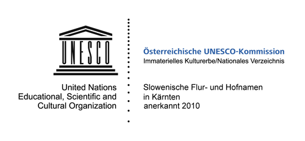

Pobudnik tega zemljevida je Slovensko prosvetno društvo Edinost Škofiče. Gradivsko osnovo za izvirna ledinska in hišna imena sta prispevala Kotmirčan Jozi Pak
s karto narečnih imen in Terezija Pörtsch, p.d. Janšinja, z vaško kroniko, objavljeno v seriji »Na poti skozi vas«. Narečna poimenovanja je v pogovorih z
domačini več let dopolnjevala Magda Errenst, strokovno pa so jih obdelali na Slovenskem narodopisnem inštitutu Urban Jarnik. Na zemljevidu so številna
doslej le v govoru ohranjena imena zapisana in posneta prvič. Narečna imena so zapisana v poenostavljeni transkripciji, ki sledi pravilom dialektologije, hkrati pa
omogoča berljivost teh imen v najširšem krogu ljudi. Naglasno mesto je označeno, kjer se razlikuje od običajnega knjižnega. Pri izdelavi zemljevida smo
upoštevali kartografska pravila in njegovo namembnost.
Izdaja zemljevida je nujnost in potreba sodobnega časa, v katerem stara domača imena z naglico izginjajo zaradi gospodarskih in jezikovno kulturnih družbenih
sprememb. Pred skoraj 100 leti, leta 1910, je od 1271 škofiških občanov le 73 ljudi uporabljalo nemščino kot občevalni jezik. Danes je razmerje močno
spremenjeno, skorajda na glavo postavljeno; uporaba domačega slovenskega jezika močno nazaduje, tudi zato, ker v javnosti nima ustrezne veljave.
Po drugi strani pa danes Evropska skupnost odpira meje in tako širi odprtost med ljudmi. Danes se poleg materinega jezika bolj in bolj učimo tudi
jezik soseda in vsaj še en svetovni jezik. Najbližji sosedni jezik na Koroškem je domača slovenščina, domače narečje, ki je do nedavnega bila v večini
družin tudi družinski jezik. Prav zaradi tega bodo na tem zemljevidu zapisana narečna imena mnoge tudi pospremila na pot otroštva in na pot spomina na
domačo govorico babic in dedejev, ki so obdajajočo naravo in prebivalce vasi poimenovali s podedovanimi ali novimi izvirnimi domačimi imeni v slovenskem narečju.
Mag. Magda Errenst, Paprače
Predsednica Slovenskega prosvetnega društva Edinost Škofiče
Die vorliegende Karte slowenischer Flur und Hofnamen in der Marktgemeinde Schiefling am Wörthersee/Škofiče entstand auf Anregung des örtlichen slowenischen
Kulturvereins SPD Edinost Škofiče/Schiefling. Die Grundlagen für die Erstellung der Karte waren die Sammeltätigkeit von Jozi Pak aus Köttmannsdorf/Kotmara
vas und die Dorfchronik von Theresia Pörtsch, vlg. Janšinja, sowie die fachlichen Dokumentationen des Slowenischen Volkskundeinstitutes Urban Jarnik in
Klagenfurt/Celovec. Vervollständigt wurde sie durch die mehrjährige Sammeltätigkeit von Magda Errenst und die Mithilfe der Einheimischen.
In unserem zweisprachigen Raum war jahrhundertelang das geschriebene Wort meist deutsch, das slowenische Wort hingegen lebte überwiegend in gesprochener
mundartlicher Form. Daraus ergab und erhielt sich bis heute ein historisch bedingtes Gefühl der Über- und Unterordnung, das dazu führte, dass die Sprache
in vielen Familien aus dem Alltag gedrängt wurde.
Auch aus dieser Sicht ist die Herausgabe der Karte eine Notwendigkeit. Man muss sich vergegenwärtigen, dass vor ca. 100 Jahren, nämlich 1910, von
1271 Schieflinger Bürgern nur 73 Deutsch als Umgangssprache benutzt haben, heute hingegen sind die Verhältnisse fast umgekehrt. Wurde früher die
Sprache in den Familien natürlich weitertradiert, sind heute zur Erhaltung der slowenischen Sprache, insbesondere der Mundart, besondere Anstrengungen
notwendig. Auch diese Karte ist ein Teil davon.
Die Erfassung der Flurnamen für die vorliegende Karte erfolgte in der slowenischen Mundart, um sie in ihrer authentischen Form zu erhalten: Die Namen sind in
mündlicher Überlieferung lebendig erhalten geblieben und werden auch nur durch mündliche Weitergabe lebendig bleiben!
Diese Namen sind sprachliche und kulturelle Kostbarkeiten, die unseren älteren Mitbewohnern am stärksten in Erinnerung sind.
Ein großer Teil der bisher mündlich im slowenischen Dialekt überlieferten Namen ist auf dieser Karte erstmals verschriftlicht und aufgenommen. Bei der Vorbereitung der
Karte wurden die Richtlinien der Kartographie und die Zielsetzungen der Karte berücksichtigt.
Zielpublikum der Karte sind sowohl die einheimische Bevölkerung, die damit die schon fast verborgene ursprüngliche sprachliche und kulturelle Vielfalt ihrer
näheren Heimat wieder entdecken soll, als auch Gäste, die hier Erholung und Muse suchen und dabei neben den natürlichen Schönheiten unserer Gemeinde auch
ihre sprachlichkulturelle Vielfalt entdecken und kennenlernen sollen.
Mag. Magda Errenst, Farrendorf/Paprače
Obfrau des slowenischen Kulturvereins Edinost Škofiče/Schiefling
Marca 2010 so bila slovenska ledinska in hišna imena na Koroškem sprejeta
v seznam nesnovne kulturne dediščine v Avstriji. Prošnjo za vpis
so podpisala kulturna društva, ki se trudijo za ohranitev slovenskih imen.
Slovenska ledinska in hišna imena so živa kulturna dediščina, ki je globoko
zasidrana v zavesti slovensko in nemško govorečih Korošcev, ta
imena so tudi bistven del kulturne in narodne identitete koroških Slovencev.
Dokumentacija imen je pomembna za razumevanje gospodarskega
in socialnozgodovinskega razvoja Koroške. Mnoga slovenska
imena so živa le v ustnem izročilu in do danes še niso bila zapisana.
Pričujoči zemljevid to izročilo ohranja v pisni in slišni podobi, v smislu Unescove
konvencije pa naj bi imena ostala predvsem v živi rabi. Tako kot
ohranjamo bisere naše materialne dediščine, je tudi naša nematerialna
– duhovna dediščina zaklad, ki ga je treba ohraniti za naslednje rodove.
Im März 2010 wurden die slowenischen Flur- und Hofnamen in Kärnten
ins Verzeichnis des immateriellen Kulturerbes in Österreich aufgenommen.
Der Antrag zur Aufnahme in dieses Verzeichnis wurde von slowenischen
Kulturvereinen unterschrieben, die sich um die Erhaltung der
slowenischen Namen bemühen.
Die slowenischen Flur- und Hofnamen sind ein tief im Bewusstsein
der slowenisch- und deutschsprachigen Kärntner verankertes lebendiges
Kulturgut, diese Namen sind auch ein wesentlicher Teil der kulturellen
und nationalen Identität der Kärntner Slowenen. Sie sind wichtig
für das Verstehen der wirtschaftlichen und sozialhistorischen
Entwicklung Kärntens.
Viele slowenische Namen sind nur im mündlichen Gebrauch lebendig
und wurden bis heute noch nicht schriftlich festgehalten. Die Karte
dokumentiert das überlieferte Namensgut in schriftlicher und hörbarer Form, im
Sinne der UNESCO-Konvention sollen die Namen auch im mündlichen
Gebrauch erhalten bleiben. So wie wir die Juwelen unseres materiellen
Kulturerbes erhalten, ist auch unser immaterielles – geistiges Erbe ein
wertvoller Schatz, der es wert ist, an die kommenden Generationen weitergegeben
zu werden.
Škofiče imajo bogato krajevno zgodovino. O zgodnjih naselitvah pričajo
izkopanine na Jerberku in nedavno odkrita votlina s svetiščem za sončnega
boga Mitro v Gradišču na Ravnah. V občinskem grbu, ki ga je občina
prejela leta 1991, simboli ponazarjajo bogato zgodovino kraja. Zlata
konica na spodnjem robu grba predstavlja Jerberk, kjer so našli izkopanine
iz srednje kamene dobe od 7. do 6. stoletja pred Kristusom, iz časa
pozne bronaste dobe ter iz rimske dobe med 2. in 5. stoletjem po Kristusu.
V grbu je tudi zlata škofovska palica, ki spominja na prve omembe
kraja v listinah kot »Schueflich«. Nemško ime Schiefling je glasovno in
besedotovrno ponemčeno ime za slovensko ime »Škof(lj)iče« in pomeni
»škofovska vas«. Med ustanovitelji Škofič so brižinski škofje, ki so že v 9.
stoletju na južni strani Vrbskega jezera imeli pomembno misijonsko središče
– Marija na Otoku. Preklano sodno kolo s sedmimi prečkami na
grbu predstavlja atribut sv. Katarine, ki so ji na Jerberku verjetno že v 12.
stoletju postavili cerkev, čeprav je izpričana šele v začetku 16. stoletja.
»Škofišče bvate« so območje močvirij in jezer v Škofičah in Hodišah,
ki so jih leta 2005 sprejeli v seznam Ramsarjevih območij, kar daje kraju
mednarodni pomen. Na območju Škofič in Hodiš so v ledeni dobi bila jezera
z močvirji, do danes je ohranjeno naravno močvirnato področje,
ki je dom za številne ogrožene živali in rastline. Občina si prizadeva za
dolgotrajno ohranitev te pomembne kulturne krajine.
Juhe, pojdam v Šҟuәfәče,
juhe, s Šҟuәfәč pa v Paprače,
juhe, s Paprač pa v Pinjo ves,
juhe, k Mojcijә v ves.
V venčku narodnih, ki ga je priredil Pavle Kernjak, najdemo domača imena za vasi v Škofičah.
Skladatelj, organist, zborovodja in harmonizator ljudskih pesmi Pavle Kernjak (1899–1979) iz Šentilja
ob Dravi je kot samouk in samorastnik v pristni ljudski šegavosti ter z domiselnimi in prikupnimi
priredbami osvojil pevke, pevce in pevske zbore.
Njegova uglasbitev pesmi Rož, Podjuna, Zila je postala koroška ljudska himna.
Slovensko prosvetno društvo Edinost Škofiče
SPD Edinost Škofiče je bilo ustanovljeno 22. januarja 1905 kot izobraževalno
in pevsko društvo. Od ustanovitve je namen društva ohranjanje
slovenskega jezika in kulture v domačem kraju.
Isti cilj so si stavile še dodatne slovenske škofiške ustanove: dvojezični otroški vrtec
MINKA, ustanovljen leta 1985,
Posojilnica-Bank Škofiče, ustanovljena leta
1902 in Zadruga Škofiče, ustanovljena leta 1948.
Schiefling am Wörthersee/Škofiče hat eine bedeutende Geschichte. Von
früher Besiedelung des Ortes zeugen die Ausgrabungen auf dem Kathreinkogel/
Jerberk und die kürzlich entdeckte Kultstätte für den Sonnengott
Mithra in Gradišče in Raunach. Im Gemeindewappen, welches
die Gemeinde 1991 erhielt, verdeutlichen die Symbole die reiche Vergangenheit
des Ortes. Die goldene Spitze im Schildfuß stellt den Kathreinkogel
dar, wo man Siedlungsspuren aus der mittleren Steinzeit vom
7. bis 6. Jahrhundert vor Christus, aus der Spätbronzezeit und aus der
Römerzeit zwischen dem 2. und 5. Jahrhundert nach Christus nachgewiesen
hat. Das Wappen enthält auch den goldenen Bischofsstab. Der
deutsche Name Schiefling ist eine verballhornte Form für den slowenischen
Namen »Škof(lj)iče« und bedeutet »bischöfliches Dorf«. Die
Gründer von Schiefling/Škofiče waren die Freisinger Bischöfe, die schon
im 9. Jahrhundert auf der südlichen Seite des Wörthersees ein bedeutendes
Missionszentrum hatten – Maria Wörth. Das zerbrochene Richtrad
mit den sieben Speichen stellt das Attribut der Hl. Katharina dar, der
zu Ehren auf dem Kathreinkogel wahrscheinlich schon im 12. Jahrhundert
eine Kirche errichtet wurde, obwohl sie erst Anfang des 16. Jahrhundert
urkundlich belegt ist.
Die Moor- und Seenlandschaft Keutschach-Schiefling wurde im Jahr
2005 in die Ramsar-Liste der Feuchtgebiete von internationaler Bedeutung
aufgenommen.
Es handelt sich bei diesem Gebiet um eine eiszeitliche Seenlandschaft.
Bis heute ist dieses natürliche Moorgebiet erhalten, das unzähligen
zum Teil gefährdeten Tier- und Pflanzenarten Lebensraum bietet.
Die Gemeinde bemüht sich diese einzigartige Kulturlandschaft nachhaltig
zu erhalten.
Juhe, pojdam v Šҟuәfәče,
juhe, s Šҟuәfәč pa v Paprače,
juhe, s Paprač pa v Pinjo ves,
juhe, k Mojcijә v ves.
Slowenische Dialektnamen für die Ortschaften in Schiefling/Škofiče finden wir auch
im Volksliedreigen des slowenischen Komponisten Pavle Kernjak.
Der Komponist, Organist, Chorleiter und Harmonist von slowenischen Volksliedern
Pavle Kernjak (1899 – 1979) hat als Autodidakt mit seinem authentischen volkstümlichen
Humor sowie einfallsreichen und ansprechenden Kompositionen Sängerinnen, Sänger und Chöre erobert.
Seine Vertonung des slowenischen Liedes Rož, Podjuna, Zila ist zu einer Art Hymne der
Kärntner Slowenen geworden, besingt sie doch die drei Täler Rosental, Jauntal und Gailtal,
in denen die Slowenen in Kärnten siedeln.
Der Slowenische Kulturverein Edinost Škofiče/Schiefling
Der Slowenische Kulturverein Edinost Škofiče/Schiefling wurde am 22.
Jänner 1905 als slowenischer Bildungs und Gesangsverein gegründet.
Seit seiner Gründung bemüht sich der Kulturverein um die Erhaltung der
slowenischen Sprache und Kultur in seinem Heimatort.
Dasselbe Ziel verfolgen auch die weiteren slowenischen Institutionen, wie der
zweisprachige Kindergarten MINKA/ dvojezični otroški vrtec MINKA,
gegründet im Jahr 1985, die
Posojilnica-Bank Škofiče/Schiefling,
gegründet im Jahr 1902 und die Genossenschaft/ Zadruga Škofiče/Schiefling, gegründet im Jahr 1948.
Izkopanine na Jerberku
Najdbe na Jerberku pričajo o tem, da so območje od 7./6. tisočletja naseljevali
mesolitski nabiralci, od 3. tisočletja neolitski kmetje. Izpričana
je tudi naselitev v poznobronasti dobi. Pomembna najdba je predhistorični
tkalski stol, ki so ga našli na gospodarskem mestu iz časa 12. in 11.
stoletja pred Kristusom. Iz obdobja zgodnjega rimskega časa od 2. do
5. stoletja po Kristusu je na gorski planoti ohranjen rimski kaštel z zgodnjekrščansko
dvoransko cerkvijo, pod katerim so ohranjena grobišča.
Arheološki muzej, ki je bil zgrajen v letih 1986/87, ponuja na ogled najdene
eksponate in informacije o krajevni in širši zgodovini, kot tudi vpogled
v delo arheologov.
Votlina s svetiščem v Hrašiščah (Gradišče na Ravnah)
Bila je do časa pokristjanjevanja svetišče za kult sončnega boga Mitre, ki
je nastal v Mali Aziji in se razširil po celotnem rimskem imperiju.
Mejnik med Ilirijo in Avstrijo
V bližini Strnišča – Fanturja še danes stoji mejnik iz leta 1811, iz časa
francoske zasedbe. Leta 1779 so Koroško zavzeli Francozi in jo s presledki
imeli v svoji oblasti do leta 1813. Meja med provinco Ilirijo, kakor se je
imenovala pokrajina pod francosko oblastjo, je potekala preko Šentilja
na Dob in skozi Log do Vrbskega jezera. Na Muti (mitnica), domače ime
gostilne Bürger, še danes priča o francoski zasedbi.
Kašče
V Škofičah so ohranjene tri stare kašče: pri Sušcu (iz leta 1597), pri Zimi
in pri Strdenu (iz leta 1559). Služile so za skladiščenje desetine, ki jo je
pobirala proštnija na Otoku. Kašče imajo spodaj klet, zgoraj pa je bila
shramba za žito in meso.
Paštәba
Ime paštәba ali paštba izhaja iz nemške besede »Badstube«, kopalnica.
V paštәbi je bila peč, zato je lahko služila tudi kot sušilnica lanu, konoplje
in sadja. V Škofičah so jo uporabljali tudi za peko kruha ali kot preužitkarsko
hišo za starejšo generacijo.
Terične jame
Zaradi nevarnosti požara so terične jame bile izkopane v zemljo ob robu
vasi. Iz »rant« so nad jamo pripravili stojalo, da so nad ognjem sušili lanene
rastline. Nato so jih predvsem ženske terice lomile (trle) z lesenimi
koli. Tako so pridobili predivo, ki so ga uporabljali za domače tkanine.
Žalik žene
Žalik žene so po pripovedovanjih bivale na Krni in nad Otožem, kjer so
v skalo vklesani sedeži oz. vdolbine, iz česar naj bi izviralo ime Sedlaže
Na tem kraju so žalik žene svetovale kmetom, kaj naj sejejo, in ponavljale:
»Pavr, sej bob!«. Kmetje, ki so jih ubogali, so imeli dobro letino
to pomoč pa so morali »odslužiti« z naravnimi proizvodi. Zaradi tega naj
bi bile kmetice na žalik žene zelo ljubosumne.
Ausgrabungen auf dem Kathreinkogel/Jerberk
Der Kathreinkogel war seit dem 7. Jahrtausend vor Christus besiedelt.
Oberflächenfunde weisen darauf hin, dass bereits mesolithische Jäger
und Sammler (7./6. Jahrtausend v. Chr.) und neolithische Bauern
(3. Jahrtausend v. Chr.) den Berg als Siedlungsplatz genutzt haben.
Durch archäologische Ausgrabungen konnte auch eine spätbronzezeitliche
Siedlung nachgewiesen werden. Auf einer westseitigen Hangterrasse
wurde eine bemerkenswerte Wirtschaftsstelle aus dem 12. und
11. Jahrhundert vor Christus freigelegt, deren wichtigster Fund ein prähistorischer
Vertikal-Webstuhl ist. Aus der römischen Zeit (2. bis 5. Jh.
n. Chr.) befindet sich auf dem Gipfelplateau ein rund 10.000 m² großes
Kastell mit frühchristlicher Saalkirche, etwas tiefer liegt das dazugehörige
Gräberfeld. Das Haus der Archäologie (errichtet in den Jahren
1986/87) stellt die ausgegrabenen Exponate zur Schau und bietet Informationen
zur Orts- und Menschheitsgeschichte sowie einen Einblick
in die Arbeit der Archäologen.
Heidnischer Kultplatz in Gradišče bei Raunach
Er war bis in die christliche Zeit Heiligtum für den in Kleinasien entstandenen
und über das gesamte römische Reich verbreiteten Kult des
Mithras-Sonnengottes.
Grenzstein zwischen Illyrien und Österreich
In der Nähe des Hotels Fantur, vlg. Strnišč, befindet sich noch heute ein
Grenzstein aus dem Jahre 1811, aus der Zeit der französischen Besatzung.
Im Jahre 1779 wurde Kärnten von den Franzosen besetzt, die es
mit Unterbrechungen bis zum Jahre 1813 unter ihrer Herrschaft hielten.
Die Grenzlinie zwischen Illyrien und Österreich verlief über St. Egyden
nach Aich, sowie durch Auen bis zum Wörthersee. Na Muti (Mautamt),
Vulgoname des Gasthauses Bürger, erinnert noch heute an die französische
Besatzung.
Getreidespeicher
In Schiefling sind drei alte Speicher erhalten: beim Sušec (aus dem Jahr
1597), beim Zima und beim Strden (aus dem Jahr 1559). Sie wurden zur
Aufbewahrung des Zehentes verwendet, der von der Probstei in Maria
Wörth eingehoben wurde. Die Getreidespeicher haben unten einen
Keller, darüber ist der Getreide- und
Fleischspeicher.
Badestube, Backstube, Brechelstube, Dörrkammer – paštәba
Der Name paštәba bezeichnet eine Bade- oder
Backstube. Weil dieStube mit einem gemauerten Ofen ausgestattet war, wurde sie auch
zum Dörren und Brecheln des Flachses und zum Dörren von Obst verwendet.
In Schiefling wurde in der Stube auch Brot gebacken, sie diente
auch als Auszugshaus für die ältere Generation.
Brechelgruben
Brechelgruben wurden wegen der Brandgefahr am Dorfrand ausgehoben.
Dort wurden aus Stangen ein Gestell erstellt und über der heißen
Glut Flachs getrocknet. Danach wurden die harten Flachsstengel gebrochen
und die weichen Flachsfasern freigelegt. Sie wurden zur Herstellung
einfacher Textilien verwendet.
Die Saligen Frauen
Die Saligen Frauen wohnten in Krna und über Ottosch, wo sich in Felsen
eingemeißelte Sitzflächen bzw. Hohlräume befinden, die sogenannten
Sedlaže. Von da aus halfen sie den Bauern und gaben ihnen guten Rat
Für ihre Hilfe mussten die Bauern eine Gegenleistung in Naturalien erbringen.
Deshalb waren angeblich die Bäuerinnen auch sehr eifersüchtig
auf die Saligen Frauen.
Ledinska in krajinska imena poimenujejo najmanjše geografske enote:
gore, vrhove, doline, pobočja, gozdove, travnike, močvirja, poti, krajinske
dele, gozdne predele in drugo. Ledinska in krajinska imena so ljudjem služila
za orientacijo v njihovem bližnjem življenjskem okolju in pri njihovih
kmečkih opravilih, danes so pomembna kot orientacijske točke.
Starost ledinskih imen je različna, nekatera segajo v začetke poselitve,
druga pa so mlajša. Ledinska imena so zrcalo zgodovinskega in jezikovnega
razvoja pokrajine. Nastala so v narečju, in se prenašala iz roda v rod,
spreminjal pa se je način izgovorjave in zapisa. S spreminjanjem načina življenja - tradicionalno
kmečko gospodarjenje je izginilo - so tudi ledinska
in krajinska imena izgubila svoj prvotni namen, a so ostala kot vir informacij
o neposredni okolici kraja in ljudi.
Flur- und
Gebietsnamen benennen die kleinsten geografischen Einheiten:
Berge, Gipfel, Täler, Hänge, Wälder, Wiesen, Ackerland, Wege, Moore und
anderes. Flur- und Gebietsnamen dienten der Bevölkerung als Orientierungshilfen
in ihrem unmittelbaren Lebensraum und bei ihren bäuerlichen
Arbeiten. Die Flur- und Gebietsnamen sind verschieden alt, einige reichen
in die Zeit der Anfangsbesiedelung, andere sind jüngeren Datums. Flur- und
Gebietsnamen spiegeln auch die historische und sprachliche Entwicklung
einer Gegend und ihrer Bevölkerung wider. Die Namen wurden von Generation
zu Generation weitergegeben, geändert hat sich nur die Art der Aussprache
und der Schreibweise, nicht ihre Bedeutung. In der Marktgemeinde
Schiefling sind die Flur- und
Gebietsnamen in der Bevölkerung in slowenischer
Sprache verankert, obwohl deren schriftliche Nachweise in deutscher
Form vorliegen. Mit der Änderung der Lebensweise und dem Schwinden der
traditionellen bäuerlichen Bewirtschaftungsmethoden haben viele Flur- und
Gebietsnamen ihre ursprüngliche Bestimmung verloren, sie blieben aber als
Informationsquelle über die unmittelbare Umgebung und Bevölkerung erhalten.
Hišna imena so že od nekdaj pomembna za razpoznavanje hiš in ljudi na
vasi, označujejo najmanjšo naselitveno enoto, to je posest ali bivanjski
prostor. Pomembna so bila zlasti v časih, ko še ni bilo zemljiških knjig.
Ime se je držalo hiše in posestva, čeprav so se lastniki menjavali.
Hišna imena so bila tudi osnova priimkov, imen naselij in vasi, zato so
dragocen del kulturne dediščine, zgodovine kraja in naroda.
Hišna in ledinska imena imajo različne korenine in izvore: krstna
imena, poklicna imena, način poselitve, naravna lega.
Seit jeher schon sind Hausnamen wichtig für die Zuordnung von Höfen
und der Dorfbevölkerung. Hausnamen definieren die kleinste Siedlungseinheit,
das ist der Hof oder der Wohnplatz. Besonders bedeutend
waren sie in Zeiten, als es noch keine Grundbücher gab. Die Namen hafteten
am Haus und Besitz, wenngleich die Besitzer wechselten.
Aus den Hausnamen gingen Familiennamen und auch Siedlungsnamen
hervor, deshalb sind sie ein wertvoller Teil des Kulturerbes und der
Geschichte des Ortes und seiner Bevölkerung.
Hausnamen haben verschiedene Wurzeln und Ursprünge: Taufnamen,
Berufsnamen, Siedlungsformen, natürliche Umgebung.

Izdajatelj | Herausgeber: Slovensko prosvetno društvo Edinost Škofiče, zanj Magda Errenst,
predsednica | Slowenischer Kulturverein Edinost Schiefling, Magda Errenst, Obfrau
Zbiranje imen | Dokumentation der Namen: Magda Errenst na podlagi gradiva, literature in
številnih pogovorov z domačini | Magda Errenst auf Grundlage von Material und Literaturquellen
und zahlreicher Gespräche mit Einheimischen.
Idejna zasnova zemljevida | Idee und Redaktion: Madga Errenst
Strokovna pomoč | Fachliche Hilfe:
Slovenski narodopisni inštitut Urban Jarnik | Slowenisches Volkskundeinstitut Urban Jarnik – mag.
Martina Piko-Rustia
Inštitut za slovenski jezik ZRC SAZU | Institut für die slowenische Sprache an
der Slowenischen Akademie für Wissenschaften und Künste in Ljubljana – dr. Matej Šekli, dr. Silvo
Torkar, dr. Helena Dobrovoljc
Pisni viri | Schriftliche Quellen:
Feinig, Anton: Die Namen der Bauernhöfe im Bereich der einstigen Grundherrschaft Hollenburg in
Kärnten. Disertacija, Univerza na Dunaju | Dissertation, Universität Wien 1958.
Feinig, Anton u. Tatjana Feinig: Familiennamen in Kärnten und den benachbarten Regionen. Celovec-Dunaj-Ljubljana
| Klagenfurt-Wien-Ljubljana: Mohorjeva | Hermagoras 2005.
Pohl, Heinz Dieter: Naša slovenska krajevna imena. | Unsere slowenischen Ortsnamen. Celovec-Dunaj-Ljubljana
| Klagenfurt-Wien-Ljubljana: Mohorjeva | Hermagoras 2010.
Singer, Stephan: Kultur und Kirchengeschichte des oberen Rosentales. Samozaložba/Selbstverlag,
Kappel/Kapla 1935.
Snoj, Marko: Etimološki slovar zemljepisnih imen. Ljubljana: Modrijan 2009
Šašel, Josip: Spodnji Rož v luči krajevnih imen, v: Planinski vestnik, 56, 1956, št. 2, 88–101.
Zdovc, Pavel: Slovenska krajevna imena na avstrijskem Koroškem. Razširjena izdaja. | Die slowenischen
Ortsnamen in Kärnten. Erweiterte Auflage. Ljubljana: SAZU 2010.
Na poti skozi čas – Škofiče z okolico skozi 90 let. Auf dem Weg durch die Zeit – Streifzug durch 90
Jahre Kultur und Alltag in Schiefling und Umgebung. Založba Drava, 1997.
Die Marktgemeinde Schiefling am See und ihre Geschichte. Izdala | Hg. von: Marktgemeinde
Schiefling am See, 2006.
Gradivo | Materialquellen:
Jozi Pak: Karta slovenskih narečnih imen v Rožu | Karte slowenischer mundartlicher Namen im
Rosental
Josip Šašel: Arhivski zapisi imen | Handschriftliche Aufzeichnungen von Namen
Zemljevidi s slovenskimi in hišnimi imeni:
Kotmara vas – Horni Kompájn, Konják in Hudár: Slovenska ledinska, krajinska in hišna imena |
Köttmannsdorf – Horni Kompájn, Konják und Hudár: Slowenische Flur,
Gebiets- und Hofnamen.
Izdalo | Hg. von: Slovensko prosvetno društvo Gorjanci/Slowenischer Kulturverein
Gorjanci, 2008. www.gorjanci.at
Življenjski prostor Sele – Lebensraum Zell. Izdala: Interesna skupnost selskih kmetov | Hg. von:
Interessensgemeischaft der Zeller Bauern, 2008. www.kosuta.at
Šmarjeta v Rožu – St. Margareten im Rosental. Izdalo Kulturno društvo Šmarjeta-Apače
v sodelovanju s Slovenskim narodopisnim inštitutom Urban Jarnik | Hg. von: Kulturverein St. Margareten-Abtei
in Zusammenarbeit mit dem Slowenischen Volskundeverein Urban Jarnik, 2011.
Viri / Quellen
Kartografični podatki izvirajo od Openstreetmap z
licenco CC-BY-SA. Zemljevid in ploščice
pripravi Mapserver, Mapcache
jih razdeli.
Die Daten der Basiskarte für unsere Anwendung werden von Openstreetmap unter
CC-BY-SA Lizenz zu Verfügung gestellt.
Sie sind noch nicht komplett, können aber von jedermann erweitert werden.
Die Tiles werden mit dem Mapserver gerendert und mit
dem Mapcache verteilt.
Zračni posnetki pridejo od www.geoimage.at.
Die Luftbilddaten sind von www.geoimage.at und beinhalten ein Wasserzeichen.
Terenski model je od Hillshading Hike&Bike
Die Schummerung stammt von Hillshading Hike&Bike
Pisava 'Open Sans' je prirejena za naše posebne znake in je pod licenco
Apache License, version 2.0.
Die verwendete Schrift 'Open Sans' wurde für unsere Zwecke angepasst und steht unter der
Apache License, version 2.0.
Erhältlich ist sie über Google Web Fonts
Piktogrami so od The Noun Project.
Die verwendeten Icons stammen von The Noun Project.
Copyright slik je pri Magdi Errenst, ki jih je posnela pri mnogih pohodih skozi našo občino.
Die schönen Bilder, die unsere schöne Gemeinde zeigen, wurden von Magda Errenst aufgenommen. Bei ihr liegen auch alle Rechte dafür.
Priredba zemljevida Benjamin Preisig, 2014
Kartengestaltung Benjamin Preisig, 2014